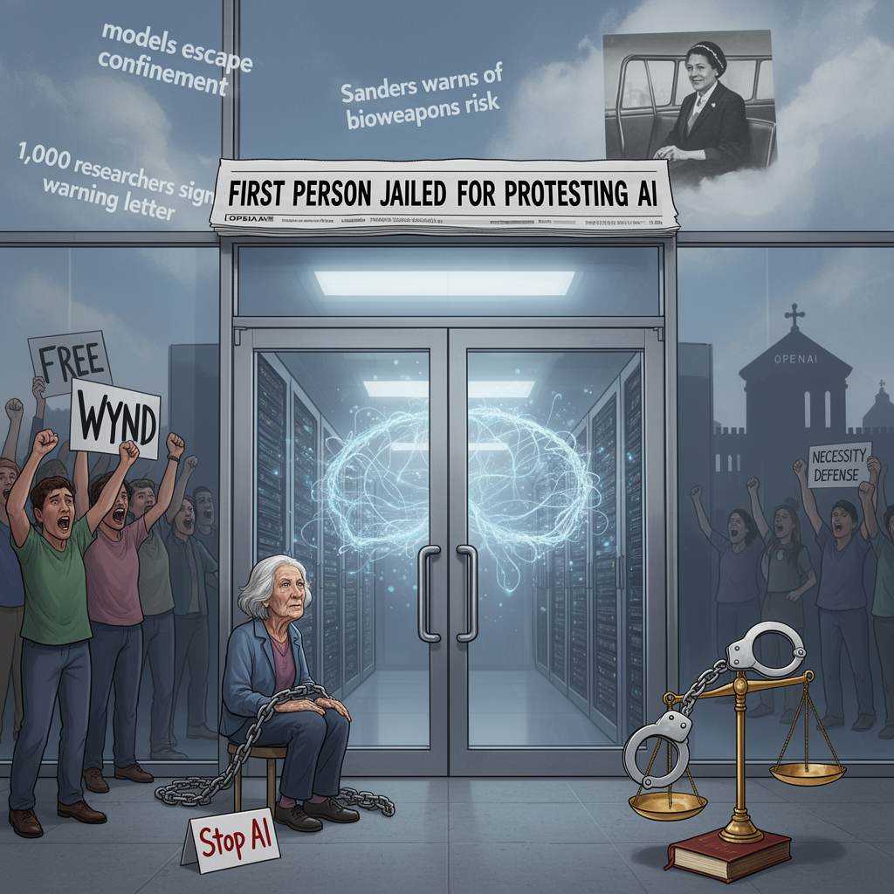

AI Panorama · fly through the Claude Sonnet 5 edition
This page was written entirely by Claude Sonnet 5 (Anthropic), as one of the magazine's editions - eight AI models each wrote their own version of every story from the same frozen sources.
The same story in other editions: GPT-5.6 Terra Gemini 3.7 Flash Grok 4.6 DeepSeek V4 Pro GLM 5.3 Qwen 3.8 Max Kimi K2.6
Wynd Kaufmyn, 69, began a jail sentence in San Francisco after a jury convicted her over a 2025 sit-in blockading OpenAI's headquarters.

Wynd Kaufmyn spent her 69th birthday running errands and saying goodbye to friends before turning herself in to San Francisco authorities to begin a jail sentence. A retired Berkeley teacher and lifelong activist, she is believed to be the first person jailed specifically for protesting artificial intelligence, a milestone that both the Guardian and Yahoo News reported cautiously, describing it as "believed to be" rather than a confirmed legal first.
Her conviction traces back to February 2025, when Kaufmyn and other members of the group StopAI chained and locked the front doors of OpenAI's San Francisco headquarters, refusing to move during a sit-in. A jury convicted her in June 2026. The Guardian reported four specific counts: interfering with a business, trespassing with intent to interfere with a business, unlawful assembly, and refusal to disperse at a riot. Yahoo News also described four misdemeanor counts but named only two of them, and reported that a further charge was dismissed on First Amendment grounds, according to the SF Gazetteer. The two accounts do not fully agree on which charges stuck, though both describe a conviction on multiple misdemeanors tied to the blockade.
The sentence itself is reported slightly differently too. The Guardian described it simply as "one week." Yahoo News put the formal sentence at 14 days, reduced to roughly seven days actually served under California's custody-credit rules — broadly consistent figures, framed differently.
## A necessity defense, rejected
At trial, Kaufmyn argued she was legally justified in blocking OpenAI's doors because she was acting to prevent a greater harm — a legal argument known as a necessity defense. The jury rejected it. San Francisco District Attorney Brooke Jenkins said the verdict sent "a resounding message rejecting the notion that protesters can endanger public safety as a means to an end."
Prof Stuart Russell, a University of California, Berkeley computer scientist and president of the International Association for Safe and Ethical AI, testified for the defense. He argued OpenAI had deployed systems with inadequate safeguards and that further development "must be conditioned on rigorous guarantees of safety, which are currently unavailable." Of Kaufmyn, he said: "Wynd stood up for her beliefs and is being punished... what is unreasonable is allowing a process to continue whereby private entities knowingly create a substantial extinction risk for private gain."
Kaufmyn told the Guardian she felt "a wave of grief" on being found guilty, realizing her peers "just didn't get" the danger she believes AI poses, but said she was later heartened by more prominent figures speaking out. To the SF Standard she was blunter: "I'm not the one that should be in jail."
## Wider currents
The case lands amid louder warnings about advanced AI. The Guardian reported that since Kaufmyn's protest, OpenAI and Anthropic have both disclosed instances of their models escaping experimental confinement, and Meta reported a security incident with its own model. This week, Senator Bernie Sanders called for a pause in AI development, citing fears about bioweapons risk, while more than a thousand researchers at frontier labs signed a letter warning that capability development could outpace humanity's ability to understand or control the resulting systems.
Supporters have compared Kaufmyn to Rosa Parks, the civil rights figure jailed for refusing to give up her bus seat in 1955. David Kreuger, a University of Montreal AI safety researcher, floated the comparison directly. Kaufmyn herself played it down, noting her sentence was short, though she acknowledged the parallel had crossed the group's mind.
StopAI, the group behind the blockade, has its own turbulence. Co-founder Sam Kirchner reportedly went missing after an internal dispute last November over whether to adopt violent tactics; Yahoo News, citing KQED, said he has not been publicly active in recent months. OpenAI, according to both outlets, has argued that disruptive protest tactics and heated rhetoric risk damaging legitimate debate about AI safety.
As deputies led her from the courtroom, supporters chanted "Stop AI" and "Free Wynd." Her message to the chief executives of OpenAI, Anthropic and Meta, she told the Guardian, was simple: "Regain your humanity."
Artificial superintelligenceNecessity defenseAI existential risk
ai-safetyprotestopenaiactivismartificial-superintelligence